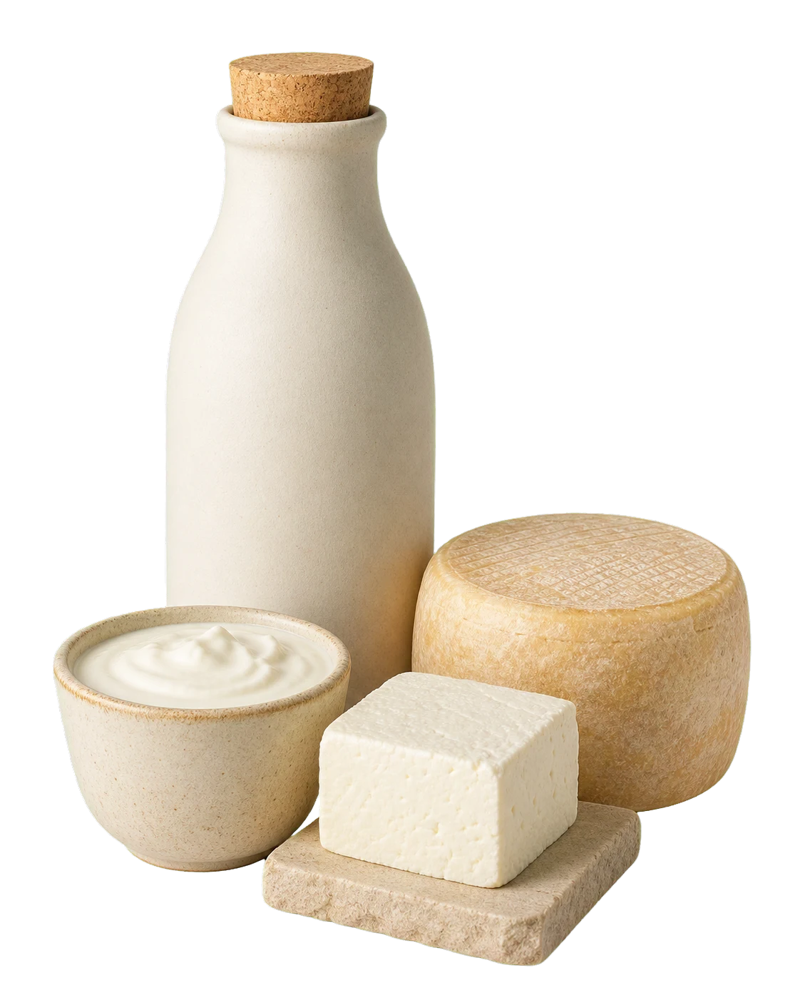

Limited release
Fresh Goat Milk
Clean and mild when carefully handled, chilled promptly and enjoyed fresh.
Request a batchOur products
A considered collection of fresh goat dairy and seasonal farm goods. We release only what the farm can make well.

Fresh · Local · Limited Small batchThe first collection
Sizes are indicative while we prepare our first regular releases. We will confirm the exact pack, batch and delivery details before accepting an order.
Clean and mild when carefully handled, chilled promptly and enjoyed fresh.
Request a batchFresh-set paneer with a delicate texture for gentle curries, grills and simple plates.
Request a batchA softly set everyday curd, designed for breakfast bowls, sides and quiet spoonfuls.
Join the interest listA slowly developed range for cheese boards, cafés and curious home kitchens.
Register interestShort runs shaped by the season—from cultured experiments to simple pantry goods.
Ask what is nextFlexible weekly sets and thoughtful farm gifts, built around what is genuinely available.
Tell us what you needHandling matters
Prompt chilling, clean containers and a short journey matter just as much as the recipe.
Each confirmed order will include practical storage guidance. Refrigerate fresh dairy promptly, use clean utensils and follow the use-by guidance provided with your batch.
Read storage FAQsReady when the farm is
No payment gateway yet—your selection opens in WhatsApp and we confirm every detail manually.